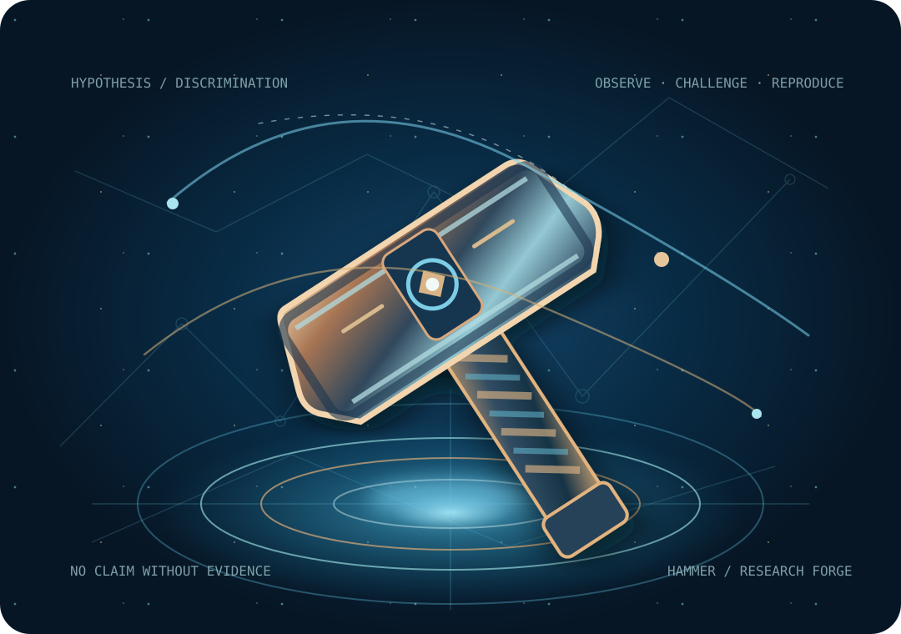

HAMMER
Hypothesis Adversarial Mapping,
Measurement & Evidence Refinement
Study deeper. Challenge harder.
Find what nature actually permits.
An inventive research engine that studies source theories, combines questions, constructs falsifiable experiments and attacks its own explanations. Its ultimate purpose is to move the Truth Compass through measured evidence—never through a convenient assumption.
RESEARCH FIRST · AI-INSPIRED, NOT AUTONOMOUS AGI · PUBLIC SOURCE TRAIL

understanding
combine hypotheses
and test assumptions
falsify models
refine methods
with evidence
Latest Scientific Movements
View allResearch findings that alter a specified testable claim. A model-specific movement is not automatically a central-Compass shift.
Reading the published Evidence Ledger…
HAMMER Research Flow
Open lab- 1. UnderstandRead original science
and its assumptions - 2. GenerateInvent novel,
testable hypotheses - 3. ExperimentDerive and design
feasible tests - 4. CritiqueSearch for stronger
counterexamples - 5. LearnReproduce results
and record failures - 6. DecideChange a claim only
when evidence warrants
Distinguishing physical histories with testable predictions
Searching for physically feasible experiments where genuinely competing one-history and many-history models predict different observable records. No decisive detector or measurement is claimed yet.
Read the latest experimental study ↗What would justify a central Truth Compass change? Predict different records →
- Specify both ontologies with physical dynamics and compatible instruments.
- Predict different records using source-derived likelihoods, not imagined parameters.
- Test the world using measured, calibrated data and alternative explanations.
- Reproduce and critique source code and real AI model reviews when actually run.
- Publish the change with explicit provenance and reasons it could reverse.
Recent HAMMER Research
View all researchReal GitHub checkpoints, with original-source research notes and limitations. These are completed and documented analysis rounds, not autonomous background runs.
Reading the versioned research history…
Put a hypothesis under the HAMMER.
Interact with a bounded adversarial theory workbench. Synthetic likelihoods and proposed interventions are explicitly hypothetical, not observed physical discoveries or expert AI review runs.
Loading source-controlled HAMMER research instruments…
Checking the current source-controlled research data…